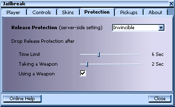
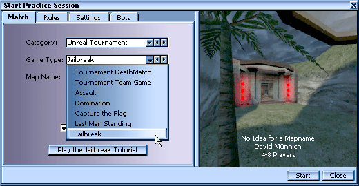
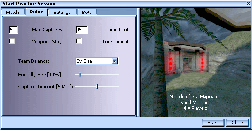
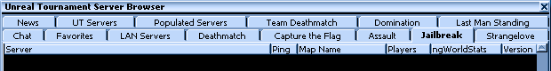

|
All
right prisoner. UT-Jailbreak is the Unreal Tournament version of
the well known game type for the Quake series. The basics of
the game are team oriented, you
and your fellow inmates (but for sake of the tournament,
we'll call them teammates) compete against another team in
an attempt to imprison the enemy while avoiding being captured yourself.
Frag your enemies and they are sent to prison. Get fragged,
you go to jail.
Each
team has their own base area which also
includes a jail release mechanism. The release mechanism
could be a button, lever, switch or other device that will
free the enemy players from jail. If an opposing player
manages to activate the jail release mechanism your jail will open and
the enemy prisoners will be released! The object is to frag
all the enemy players sending them to jail and protect the
jail release in your base to prevent them from being freed.
If you are successful and capture all the enemy players, the
opposing team will be executed, your team will score a point and everyone in the
game will be respawned to their own bases. Of course, if you
and your entire team are unlucky enough to be captured by
the enemy players, the other team scores, so try to stay out
of jail pal! Whichever team reaches the set number of
captures first (or has the most captures when the time limit
is reached) wins!
If
you've played any of the Quake incarnations of Jailbreak
you'll see that gameplay is quite similar. However,
the Unreal Tournament version of this great mod contains
many new features making it a completely unique experience.
Obviously you're gonna want to get this mod working right
away and practice staying out of jail. Installing
Jailbreak is easy for the average inmate. The mod is distributed in a .umod
package, and contains all of the path information necessary.
All you must know is the directory where Unreal Tournament
is installed. By default, this is C:\UnrealTournament, but
you may have changed it when you installed the game.
1)
Find the spot where you have downloaded the Jailbrak.umod
file and Double click the Jailbreak.umod file to open it.
A screen will pop up displaying some information and a few
buttons at the bottom. Click the "Next >"
button.
2)
Now you'll be faced with another screen. This is where you
must know the directory in which you installed Unreal
Tournament. If it's not C:\UnrealTournament then change it
to the directory where you have installed UT. Once this is done click on the
"Next >" button.
3)
In the screen that pops up now you can select which components of
Jailbreak you'd like to install. We recommend installing
everything The Description box shows a description
of the component selected in the Components list. (If
you have a newer version of the screen component already
installed on your system you can uncheck the Screen v130
checkbox.)
4)
Another screen will pop up. Click the
"Install" button and all of the files required for
Jailbreak will be installed to the appropriate folders
within your Unreal Tournament directory.
The
Jailbreak Preferences dialog (located under the Mod menu in
Unreal Tournament) has been completely revamped. It now
consists of six different tabs. Since only five of them are
actually settings and one is the credits, we'll only go over
the first five here. Remember, in prison combat you'll have to
react quickly, so make sure everything is set to your liking
before proceeding into an actual match.
|
The Player tab. This section of the dialog provides
settings for you prisoner! The Global Player Name
is the name that will be used in game as
well as for statistics keeping.
The
Player Clan is where you put your clan tag, if
you're in one. An example would be [JB1]. It's used for balancing teams by clans.
The
Jailbreak Stats Password is the password you
use for accessing your online stats. Remember,
Jailbreak stats are different than 'ng' or other kinds
of stats and use a separate password. Click the Show Stats button to view your current Jailbreak World Stats record.
|  |
|
Now
the Controls tab. This part of the dialog will set up
your key bindings. Increase Bot Aggression will
do just what it says: it will increase the aggression
of the bots on your team. The more aggressive they are
the more they'll tend to rush the enemy base.
Decrease
Bot Aggression does the opposite: it will set your
bots' behavior to a defensive style.
Switch
Compass/Scoreboard Order will do two things. When
you're playing a game it will change the focus of the
compass from either the red release switch to the blue
one or vice versa. When you have the scoreboard up it
will change the way the players are arranged. You can
order the scoreboard in seven different ways: by score,
orders, name, ping, attack kills, defense kills, and
released teammates.
View
Arena Battle will switch your view from the arena
back to the jail and vice versa when you're in prison
and an arena match is taking place. The Automatic Arena View
while in Jail property of this setting will, when
checked, automatically switch your view to the current
arena fight as long as you are in jail. That means when
you're in prison, you'll automatically get a front row
seat to any arena fights that take place! Remember
prisoner, this can be a little disorienting at first
but you'll get used to it. |
|
|
Alright,
now for the Display tab. Here you can select your
interface skin, as well as set a few options dealing
with the interface. The Select Interface Skin
dropdown box allows you to select the skin you'd like
the use as the default interface skin. You'll notice
this at the beginning of each game, or when you view
the scoreboard. This is the skin that defines your HUD
in the JB game.
With
the Default Scoreboard Sorting option you can specify the default order
of players in the scoreboard. You can always change the order in-game while viewing
the scoreboard by pressing the "Switch Compass/Scoreboard Order" key you bound in the
Controls tab.
By
checking Display Numeric Pings/Time you'll make the scoreboard display
every human player's numeric ping (in addition to the ping bar) and the time
this player is already playing in this map.
The
Use Map-Embedded Skins option
will, when checked, use the interface skin defined by
the current map (if the map has its own skin). If this
option isn't checked, the default skin, chosen from
the dropdown box, will be used in all cases. It's
usually a good idea to check this box since embedded
skins are usually jailhouse cool.
The
Use Skinned Crosshairs option will use
crosshairs that are packaged with the current skin you
have selected when it's checked. If the current skin
doesn't have its own crosshairs then the default
crosshairs for Unreal Tournament will be used.
The
Download More Skins! button at the bottom of
this tab will minimize Unreal Tournament and bring up
a web page where you can download more custom
interface skins! Customize the look of Jailbreak to
your liking prisoner! |
|
|
The
Protection tab is an important one. If you're playing
on a server online the server admin will set these and
any setting you make will not have an effect on the
game, but if you're just playing against bots you can set
them to your own liking. First of all, you must select an
option from the Release Protection box to activate
release protection.
If
you select Invincible, prisoners who have
just been released are protected with an invulnerable shield for a
certain time or until they pick up a weapon. If you select
Invincible/Llamaize, attackers who attempt to inflict
damage on protected players beyond a certain damage threshold
are llamaized in addition to
that, killed and respawned in their home base with default health,
armor and weapons and an on-screen message explaining to them
that jail camping is bad.
The
Time Limit specifies how many seconds the
release protection is active. Remember, prisoner, you
cannot hurt any opponent with the release protection
active.
The
Taking a Weapon option specifies how many
seconds the release protection remains active after a
prisoner picks up a weapon.
The
Using a Weapon checkbox will, when checked,
remove a player's release protection as soon as they
fire a weapon. If it's not checked then the time
settings will take effect. |
 |
|
And
last but not least, the Pickups tab. These settings
are, again, server-side (controlled by server admin)
but you can set them for bot matches. Whenever a team is
captured and executed, all of the items checked will
be respawned if they exist in the map. Got it? Good! |
|
Well,
prisoner, I suppose now that you're all set up you want to
actually play a game of Jailbreak. No problem. Jailbreak is
similar in some ways to a game of Capture the Flag. But
there are some very important differences too. Here, we'll just go over the settings custom to Jailbreak.
|
First
off we have to select Jailbreak as the game type. In
Unreal Tournament click on the Menu dropdown
menu, then click on Start Practice Session. The
following dialog will pop up.
Now,
click on the Game Type dropdown menu and select Jailbreak.
Clicking
the Start the Jailbreak Tutorial button will
start the interactive Jailbreak tutorial map. It'll
introduce you to the the unique features and gameplay
style of Jailbreak, and it's a very good idea to give
it a go before you start your first game.
 |
|
The
Rules tab has some settings unique to Jailbreak. The Max
Captures setting specifies how many team captures
are needed to win the match.
The
Team Balance dropdown option tells Jailbreak
how to balance each team.
The
Capture Timeout option is how long you have to
capture an entire team. For example, if this option is
set to five minutes and, after five minutes, an entire
team has not been captured, everyone in the map is
respawned. Try and capture your enemy as fast as you
can prisoner, because if you don't they'll be released
and will be hunting you down.
The
other settings under this tab are all general ones
from the stock Unreal Tournament game types.
 |
|
The
only unique option under the Settings tab is the Transloc
Delay one. It specifies how much time each player
has to wait in between translocations. If this is set
to zero seconds then there is no wait and each player
can translocate constantly.
Also,
the Jailbreak Settings button brings up the
Jailbreak preferences dialog when clicked.
|
Alright
then prisoner. After you've practiced up against bots you'll
be ready to take your skills online and face actual
opponents. Joining an online game (connecting to a server)
is, again, quite simple. You just click on the Multiplayer
dropdown menu while in Unreal Tournament. Then click on Find
Internet Games and the server browser will pop up. The
top of it will resemble the screenshot below.
When
the browser opens click on the Jailbreak tab (shown
in bold below) and wait for the games to be listed. Once
they're listed you can click on any of them to view some
current information. To join a multiplayer game just double
click on it.

Home  Back |
Next
Back |
Next
 In Game Information
In Game Information


|